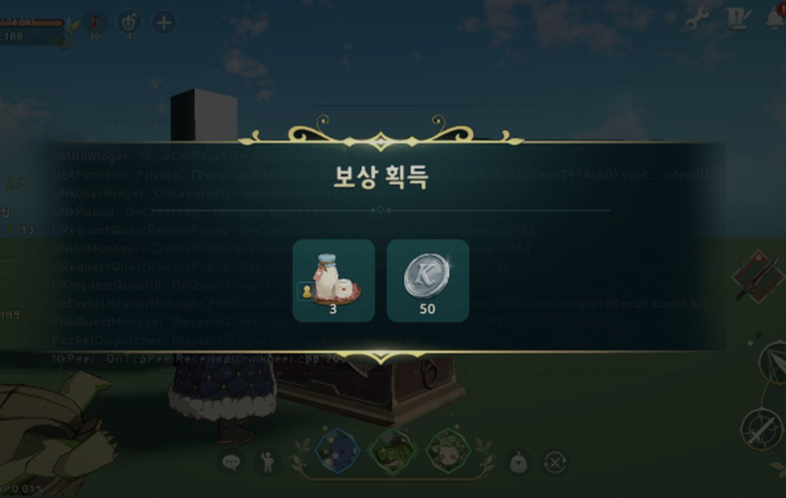
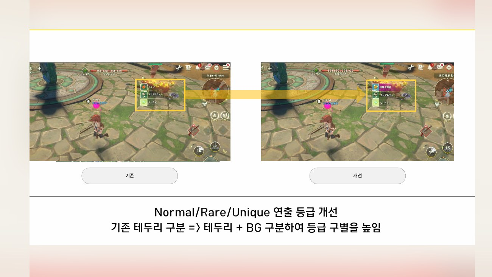
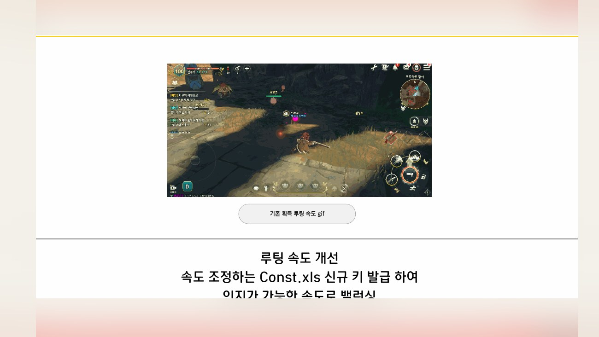
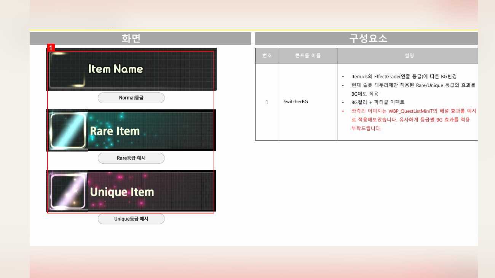
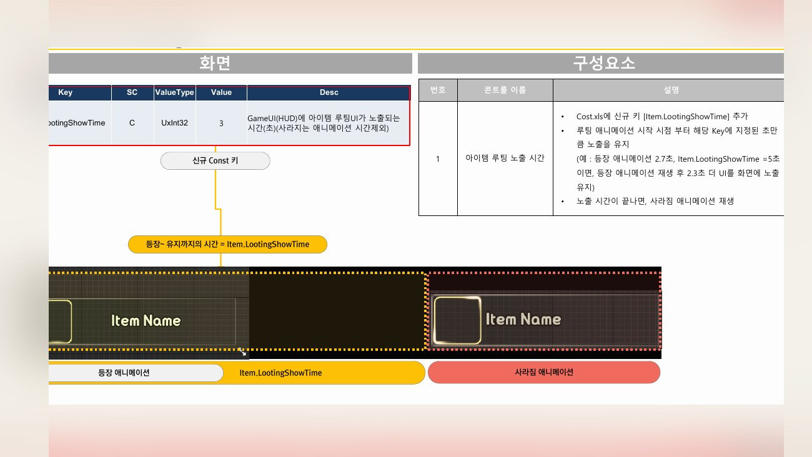

Planning Context
어떤 기획이었나
- 아이템 획득 피드백이 약하면 유저가 보상을 얻었다는 감각을 놓치거나 중요도를 판단하기 어렵습니다.
- 획득 연출은 반복 사용성이 높아 과하지 않으면서도 보상 인지가 분명해야 했습니다.
ProjectN · Item Feedback
아이템 획득 순간의 노출 방식, 보물상자 연출, 획득 피드백을 정리한 인지 개선 사례입니다.

Planning Context
Process
Deliverables
Result
보상 획득 순간의 시각 피드백과 노티 흐름을 정리해 아이템 루팅 인지를 강화했습니다.
Deliverable Captures
원본 문서는 포함하지 않고, 포트폴리오 확인용으로 일부 페이지만 이미지화했습니다. 슬라이드 마스터/상하단 영역은 흐림 처리했습니다.



